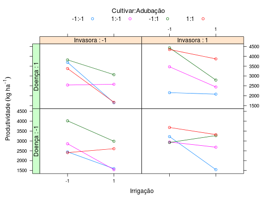

Dados de um experimento fatorial \(2^5\), com confundimento da interação de quinta ordem. Estudou-se o efeito dos cinco principais problemas da cultura: controle de invasoras, adubação, irrigação, controle de doenças e cultivar. A interação de quarta ordem (5 fatores) foi confundida com blocos. Os dados da produtividade do arroz estão em kg/ha.
Um data.frame com 32 observações e 7 variáveis, em que
blocirriadubcultdoeninvaprodZIMMERMANN (2004), (Tabela 11.19, pág. 237)
library(lattice) library(latticeExtra) data(ZimmermannTb11.19)#> Warning: data set ‘ZimmermannTb11.19’ not foundstr(ZimmermannTb11.19)#> 'data.frame': 32 obs. of 7 variables: #> $ bloc: Factor w/ 2 levels "1","2": 1 1 1 1 1 1 1 1 1 1 ... #> $ irri: num -1 -1 -1 -1 -1 -1 -1 -1 1 1 ... #> $ adub: num -1 -1 -1 -1 1 1 1 1 -1 -1 ... #> $ cult: num -1 -1 1 1 -1 -1 1 1 -1 -1 ... #> $ doen: num -1 1 -1 1 -1 1 -1 1 -1 1 ... #> $ inva: num -1 1 1 -1 1 -1 -1 1 1 -1 ... #> $ prod: num 2445 2158 2945 2545 2920 ...ftable(xtabs(~irri + cult + adub + doen + inva, data = ZimmermannTb11.19))#> inva -1 1 #> irri cult adub doen #> -1 -1 -1 -1 1 1 #> 1 1 1 #> 1 -1 1 1 #> 1 1 1 #> 1 -1 -1 1 1 #> 1 1 1 #> 1 -1 1 1 #> 1 1 1 #> 1 -1 -1 -1 1 1 #> 1 1 1 #> 1 -1 1 1 #> 1 1 1 #> 1 -1 -1 1 1 #> 1 1 1 #> 1 -1 1 1 #> 1 1 1useOuterStrips( xyplot(prod ~ factor(irri) | factor(inva) + factor(doen), data = ZimmermannTb11.19, groups = interaction(cult, adub, sep = ":"), type = c("p", "a"), xlab = "Irrigação", ylab = expression("Produtividade"~(kg~ha^{-1})), auto.key = list(title = "Cultivar:Adubação", cex.title = 1.1, columns = 4)), strip = strip.custom(strip.names = TRUE, var.name = "Invasora"), strip.left = strip.custom(strip.names = TRUE, var.name = "Doença"))